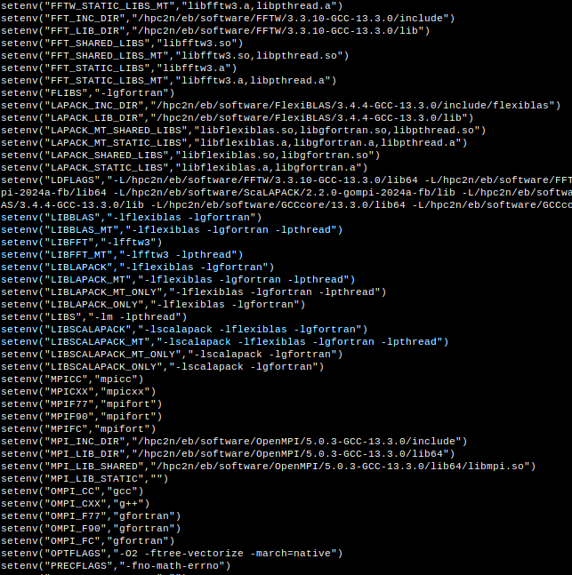

Advanced section - modules¶
buildenv - build environment¶
Using a compiler toolchain by itself is possible but can require some manual work, figuring out which paths to add to -I or -L for including files and libraries, and similar.
To make life as a software builder easier there is a special module available, buildenv. This is handled somewhat differently by different centres, with some including the buildenv module when you load a compiler toolchain and others requiring you to load it yourself after the toolchain.
This module defines a large number of environment variables with the relevant settings for the used toolchain. Among other things it sets CC, CXX, F90, FC, MPICC, MPICXX, MPIF90, CFLAGS, FFLAGS, and much more.
To see all of them, after loading a toolchain do:
ml show buildenv
To use the environment variables, load buildenv (if it is not included at your centre):
ml buildenv
Using the environment variable (prefaced with $) for linking is highly recommended!
Example: Linking with LAPACK (gcc, C program)
OR use the environment variable $LIBLAPACK (recommended, as it does not change with version and toolchain):
Example: Loading buildenv after a toolchain (GCC) and using it
In this example at HPC2N, we load buildenv for GCC/13.3.0
Buildenv also load many of the same things as foss. This is what is now loaded:
b-an01 [~]$ ml
Currently Loaded Modules:
1) snicenvironment (S) 9) libxml2/2.12.7 17) UCC/1.3.0 25) GDRCopy/2.4.1
2) systemdefault (S) 10) libpciaccess/0.18.1 18) OpenMPI/5.0.3 26) UCX-CUDA/1.16.0-CUDA-12.6.0
3) GCCcore/13.3.0 11) hwloc/2.10.0 19) OpenBLAS/0.3.27 27) NCCL/2.22.3-CUDA-12.6.0
4) zlib/1.3.1 12) OpenSSL/3 20) FlexiBLAS/3.4.4 28) UCC-CUDA/1.3.0-CUDA-12.6.0
5) binutils/2.42 13) libevent/2.1.12 21) FFTW/3.3.10 29) buildenv/default-CUDA-12.6.0
6) GCC/13.3.0 14) UCX/1.16.0 22) FFTW.MPI/3.3.10
7) numactl/2.0.18 15) PMIx/5.0.2 23) ScaLAPACK/2.2.0-fb
8) XZ/5.4.5 16) PRRTE/3.0.5 24) CUDA/12.6.0
Where:
S: Module is Sticky, requires --force to unload or purge
You can now do ml show buildenv to get a list of the various available environment variables. In the below I have coloured some of the environment variables for LAPACK, ScaLAPACK, BLAS, FFTW.
